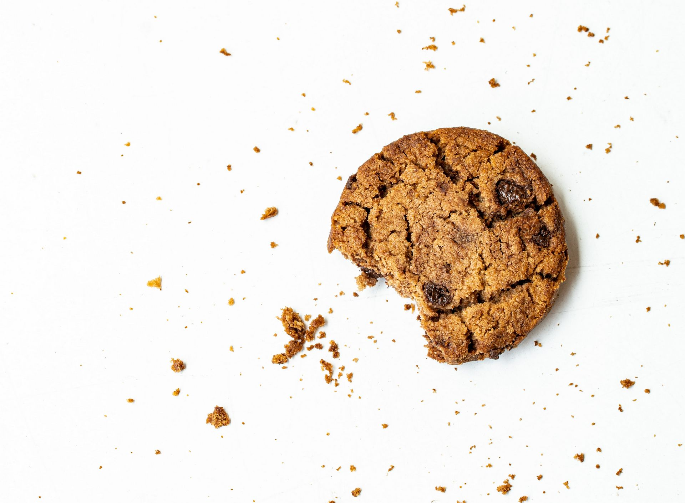

Ninguém está seguro na internet, ninguém nunca esteve seguro na internet, ninguém nunca estará 100% seguro na internet.
Nenhum sistema é seguro.
Navegadores
mecanismo de pesquisa
antivírus
vpn
Brave
O Brave é um dos navegadores mais seguros do mercado atual.
StartPage
Pesquise e navegue na Internet sem ser rastreado ou visado. A Startpage é o motor de busca mais privado do mundo.
Bitdefender Antivírus
Oferece as melhores soluções de prevenção, detecção e resposta contra ameaças em todo o mundo.
VPN
Bitdefender VPN lhe dá anonimidade total criptografando todo o tráfego no seu PC, Mac ou dispositivos móveis.

Cookies sao pequenos arquivos de texto que armazenam informações a respeito de sua relação com um site especifico, tais como:
ᐅ Preferéncias de configuracao do site (tema, cores). ᐅ Histórico de acessos e ntimero de visualizacdes. ᐅ Logins e senhas salvas.
Com cookies, um site pode:
ᐅ Construir um perfil do usudrio com base em suas preferéncias. ᐅ Manter registro do ntimero e hordrio dos acessos realizados. ᐅ Customizar 0 site para atender as preferéncias do ususrio,
Utilize a Extenção: Cookie Auto Delete --> Deleta automaticamente todos os cookies.
Cookies
VPN
A VPN fornece um canal seguro de comunicação entre duas partes, encriptando e desencriptando.
Segunda melhor VPN, rapida e de graça. Quando você usa PROTON VPN para navegar na web, sua conexão com a Internet é criptografada. Ao rotear sua conexão por meio de túneis criptografados, os recursos avançados de segurança do Proton VPN garantem que um invasor não possa espionar sua conexão .
Melhor VPN VPN ultrarrápido que mantém a sua identidade e atividades online a salvo de hackers, ISPs e bisbilhoteiros.
Tráfego encriptado ilimitado
Proteção online e anonimato
Transmissão online e downloads seguros de mídia
Sem registros de tráfego
Mais de 4.000 servidores em mais de 49 países no mundo todo
Mecanismos de Pesquisa
Motor de pesquisa ou ferramenta de busca ou buscador é um programa desenhado para procurar palavras-chave fornecidas pelo utilizador em documentos e bases de dados
Resumindo o mecanismo de pesquisa é onde você, o usuário digita quando precisa procurar algo no seu navegador.
Vou mencionar 2 mecanismos de pesquisas mais utilizados quando se trata de privacidade.
StartPage
Hoje é melhor mecanismo de pesquisa pois ele não deixa nenhum registro de navegação no seu histórico.
O StartPage faz uso da máquina de pesquisa do Google. Ou seja, toma os termos de pesquisa que você forneceu e vai fazer a consulta ao Google – fornecendo as próprias informações ao Google, em vez das suas. É assim que a sua privacidade fica preservada.
DuckDuckGo
O Duckduckgo é um buscador que surge com uma proposta de não armazenar os seus dados para que você tenha uma navegação segura. Esse mecanismo surge como algo diferenciado dos buscadores que utilizam de cookies (que são armazenadores de dados, e que de certo modo controlam a experiência virtual).
Hoje ele se encontra em segundo lugar como melhor mecanismo de pesquisa para privacidade.
Se você utiliza o Google Chrome como seu navegador principal, opte por usar algum mecanismo de pesquisa ao lado.
Extensões para seu navegador
1° Privacy Bagder ---------------> Bloqueia rastreadores e trackers de sites.
2° ADBlock Plus ------------------> Bloqueia de anuncios
3° uBlock Origen ----------------> Melhor bloqueador de filtros e anuncios eficiente. Com baixo uso de memória e CPU.
4° TamperMonkey --------------> Extensão que você pode adicionar scripts personalizados para tudo.
5° HTTPS Everywhere ---------> Adiciona HTTPS em sites HTTP, para garantir sua segurança.
6° Network Sniffer --------------> Monitore, pesquise suas solicitações de rede e baixe-as facilmente
7° Link Klipper --------------------> Extrai todos os links disponiveis em um site
8° Blackbox ------------------------> Extrai o Texto de qualquer coisa na internet
Cada um desses sites lhe permite criar um e-mail temporário, com um tempo determinado que ira desativá-lo. Com isso garante maior segurança na hora de enviar algum e-mail ou no caso de se cadastrar em algum site especifico.
Dica extra:
Utilize como caixa de correio principal o PROTON MAIL, pois é um serviço de correio eletrônico criptografado de ponta a ponta.
O Serviço é gratuito e muito fácil de configurar.
Dicas de segurança para rede social
Como apresentar um comportamento ativo nas redes sociais voltado para privacidade:
1° Nao informe relacionamentos (namoro, casamento, parentes) nas redes sociais 2° Deixe suas postagens e fotos como “somente amigos" 3° Desative a localização nas postagens. 4° Evite confirmar presenca em eventos. 5° Quando fizer login em redes publicas que exijam autenticação via Facebook, faça-o na forma privada. 6° Deixe sua lista de amigos privada. 7° Filtre quem você aceita como amigo em redes sociais. 8° Pense nas consequéncias de qualquer informação que você publicar.